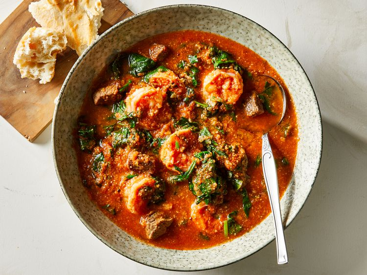

Egusi soup

Description
Egusi soup is native to West Africa (Nigeria), and many of my American and Nigerian friends have enjoyed it. It is a
great soup for those who like to try something different every once in a while. Ground Egusi seeds give this soup a
unique color and flavor. If you can't find Egusi seeds, you can substitute pumpkin seeds. Any combination of crab,
shrimp, and smoked fish can be used in place of the shrimp. Drained, smoked oysters and chicken can be used in place of
the beef.
Ingredients
- 3/4 cup pumpkin seeds
- 3/2 pounds cubed beef stew meat
- salt to taste
- 1/2 cup peanut oil
- 2 large tomatoes, chopped
- 1 small onion, chopped
- 2 habanero peppers, seeded and minced
- 2 pounds fresh shrimp, peeled and deveined
- 18 ounces tomato sauce
- 3/2 cups of water
- 3 tablespoons tomato paste
- 1 pound fresh spinach, washed and chopped
Steps
- Place pumpkin seeds in a blender; blend until mixture is powdery, 30 to 40 seconds. Set aside
- Cut beef into bite-sized cubes; season with salt
- Heat oil in a large pot over medium-high heat. Cook beef in hot oil until brown but not cooked through, 3 to 5 minutes
- Place tomatoes, onion, and peppers in a blender; blend until smooth, about 30 seconds. Stir tomato mixture into beef;
reduce heat to medium-low and cover. Cook until meat is tender, 40 to 50 minutes.
- Add shrimp, tomato sauce, water, and tomato paste; simmer for 10 minutes.
- Stir in spinach and powdered pumpkin seeds. Continue simmering for 10 more minutes.